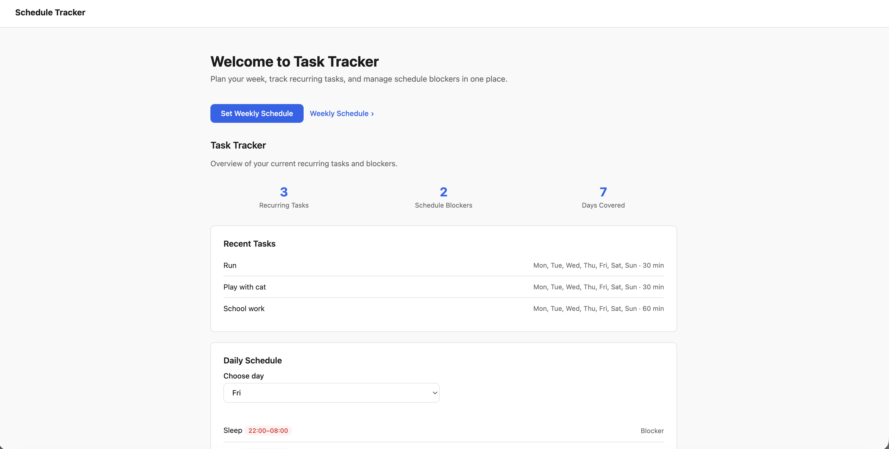
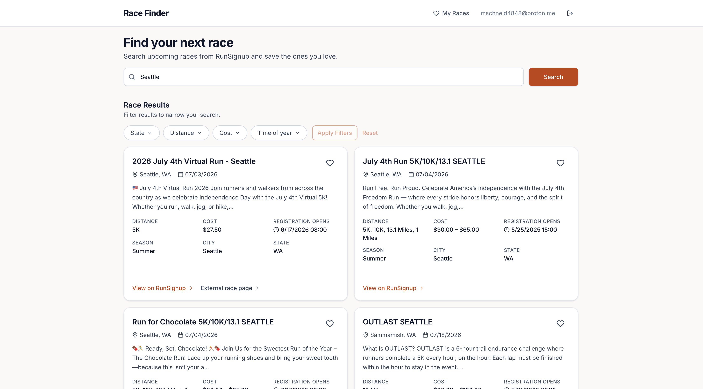
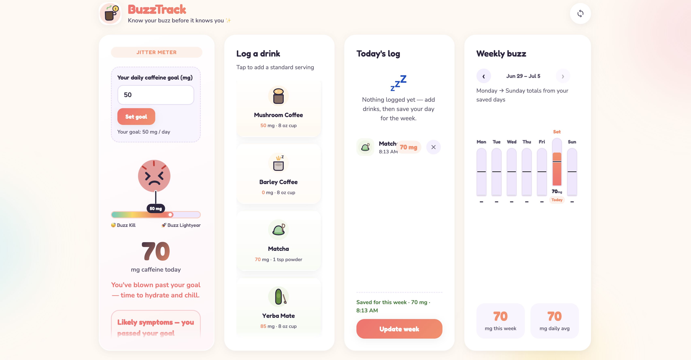

Vibe Coding Portfolio
Build
With
Intent
A collection of web projects shaped by curiosity, iteration, and the joy of making things work — from task tools to race finders and trend trackers.
View projects
Selected work
Featured Projects
Three apps built through vibe coding — rapid prototyping, real problems, and polished interfaces.
Productivity
View project
Race data search and tracking
View project
Caffeine data analysis
View project
Task Tracker
A focused task management app for capturing, organizing, and completing daily work with a calm, distraction-free interface.

Race Finder
Race Finder is an app users can use to find, save, and track their races using the RunSignup API.

Buzz Tracker
A simple, fun, and easy to use caffeine tracker to track your regular intake.
